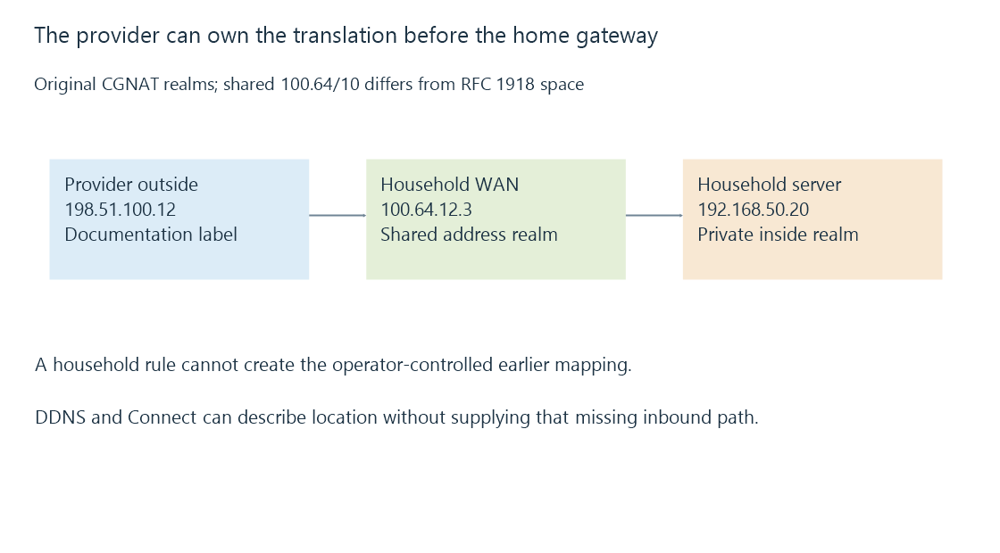

Carrier-grade NAT and control of inbound mappings
Carrier-grade NAT places subscriber traffic behind an operator-controlled translation layer, so household gateway settings do not necessarily provide an outside inbound service mapping.
Your home router can have a WAN address that is not the address outside services see. Another translation layer may stand between the household gateway and the internet.
With carrier-grade NAT, or CGNAT, that layer is operated by a provider and can share an outside IPv4 allocation among subscribers.
The shared range is not RFC 1918 private space
RFC 6598 reserves 100.64.0.0/10 for shared addressing. It spans 100.64.0.0 through 100.127.255.255.
It is distinct from the three familiar RFC 1918 blocks. Looking only for 10., 172.16–31. and 192.168.* can therefore miss this context.
Use an original topology:
| Layer | Address label |
|---|---|
| Emby server inside the home | 192.168.50.20 |
| Home gateway’s provider-facing side | 100.64.12.3 |
| Provider’s outside side | 198.51.100.12 |
The last value is a documentation stand-in, not an actual public endpoint.

The presence of a shared-range address is evidence of that address realm. An address comparison alone does not fully identify every intermediary or provider policy.
The household controls only its own mapping
A household rule can translate an arriving request at 100.64.12.3 to the internal server. It cannot make outside traffic arrive there through the operator’s gateway unless that earlier layer provides the required path.
An ordinary dynamic-DNS update can correctly point to the provider’s outside address while leaving no subscriber-specific inbound association.
Dynamic DNS changes the descriptive record. It does not allocate an external transport endpoint in the provider’s translator.
Shared allocations also share outside port resources
The provider can distinguish subscriber flows through ports and other state. A public-facing IPv4 address alone does not select one subscriber’s home server.
Outbound requests and their replies can work because appropriate translation state exists. A new inbound request for an Emby listener needs a separate supported association and permitted path.
This is the same broad distinction as double NAT, with the important added question of who can control the outer layer.
Another route needs its own prerequisites
Possible connection designs include an operator-provided public allocation or supported mapping service, routed IPv6 where both ends and policies support it, or a VPN/tunnel arrangement that supplies a reachable intermediary.
These are different capabilities, not settings that every connection necessarily offers. Each still needs its return route, service and access policy.
Emby Connect helps clients locate their selected server. Its documented direct-connection role does not itself create an operator-controlled inbound mapping.
Compare the relevant layer’s observation
A gateway’s displayed WAN address, an outside address observation and the endpoint advertised to apps describe different positions in the path.
They should be compared for the same address family and connection context. A VPN or different outgoing interface can make another observation represent a different route.
See Also
- Private, public and special-purpose IP addresses
- Double NAT and two translation boundaries
- Dynamic DNS and a changing server address
- VPN access and the routed path to a media server